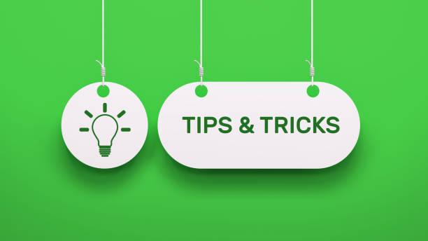

Tips And Tricks

Tips for being a productive panther
- Go to Class!!!
- Attend Office Hours
- Go to the library
- Join Clubs or Organizations: This not only builds your resume but also allows you to meet new people, learn outside the classroom, and find potential leadership opportunities.
Personal Tips and Tricks
- Make a groupme with your classmates
- Don't spend your panther bucks too fast. Use your meal swipes instead since you're already paying for it.
- Don't wait until the last minute to turn in your work.
- Find a balance between social life and academic life.
- STAY OFF THE GRASS!!! (The school used to be a plantation; it's respectful to be mindful since the exact burial locations are unknown.)